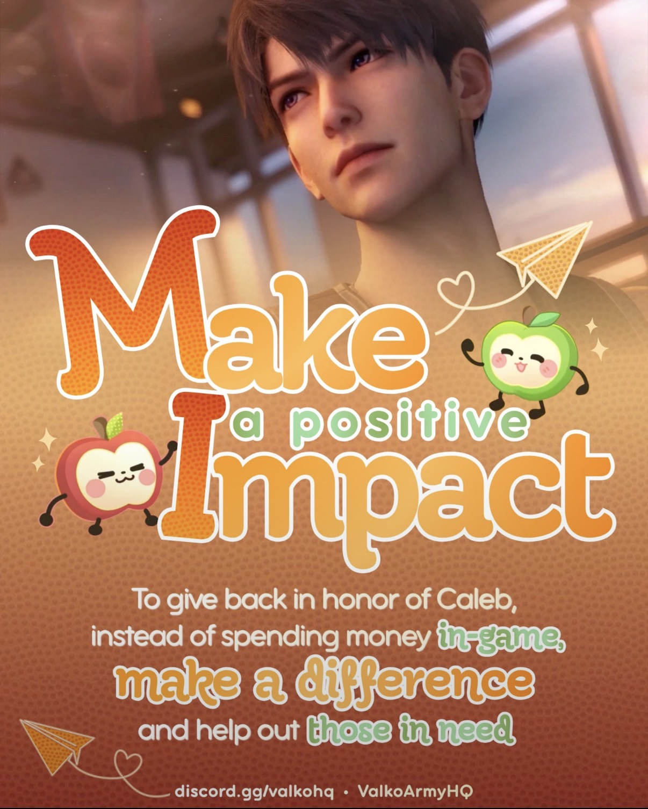
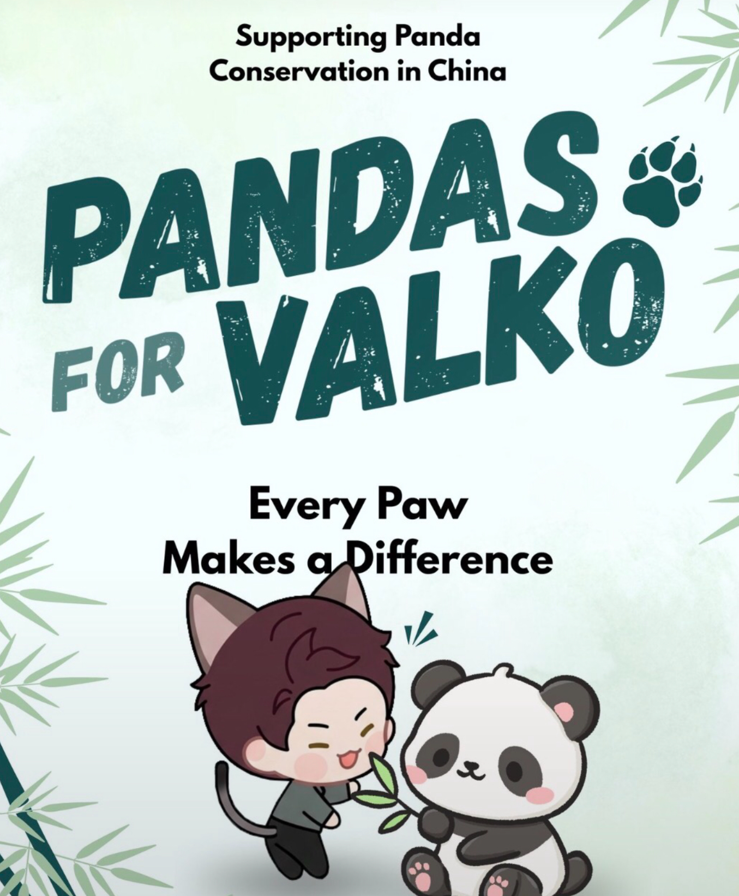
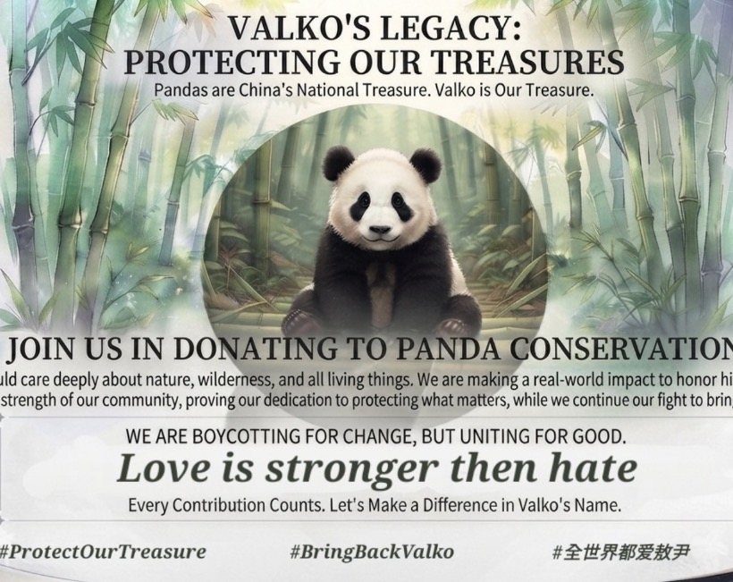
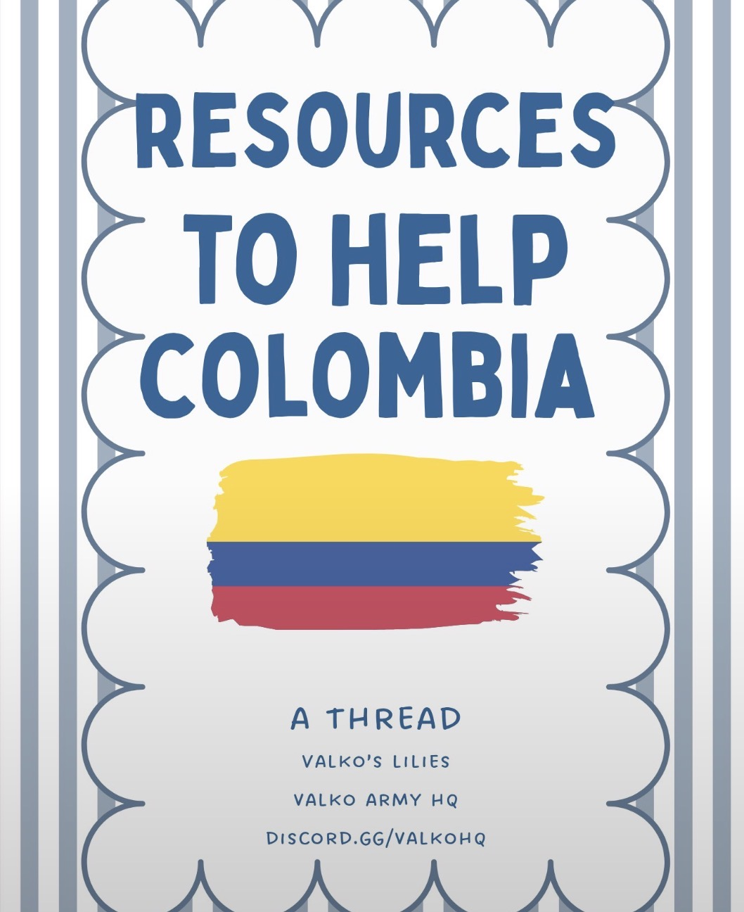
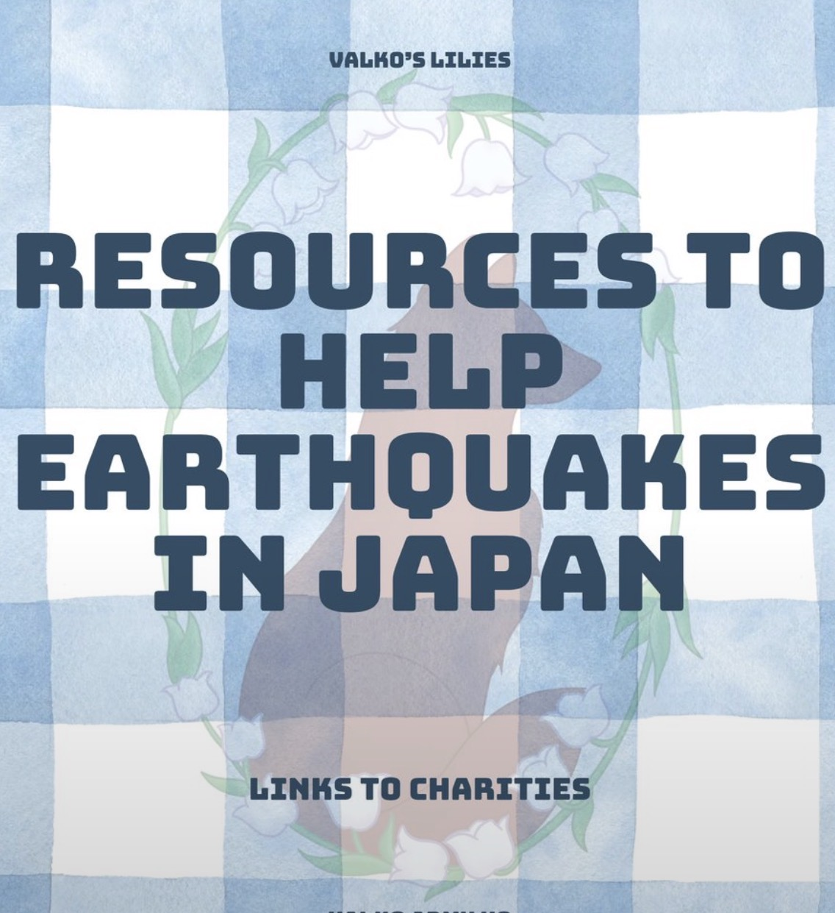
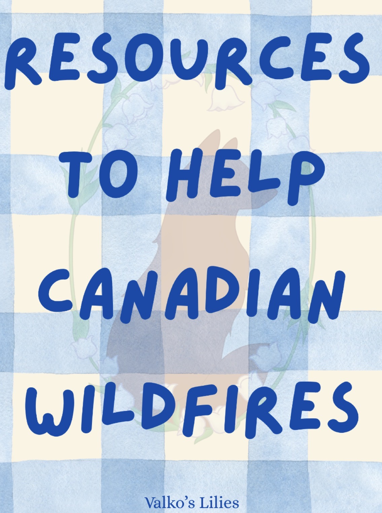

Make a Positive Impact
To give back in honor of Caleb, instead of spending money in-game, we're making a difference and helping out those in need. Every donation made in Caleb's name helps spread his love to the rest of the world.

To give back in honor of Caleb, instead of spending money in-game, we're making a difference and helping out those in need. Every donation made in Caleb's name helps spread his love to the rest of the world.


Supporting panda conservation in China, in honor of Valko's love for nature and all living things. Every paw makes a difference — join us in donating to verified panda conservation organizations.

On August 10, 2026, a magnitude 7.4 earthquake struck western Colombia — the strongest to hit the country in a decade. The epicenter was in the Chocó department, with over 265 people killed, more than 3,700 injured, and over 4,100 still reported missing. Damage spread across 13 departments and 357 municipalities, with the hardest-hit areas including Risaralda, Valle del Cauca, Chocó, and Caldas.

On July 28, 2026, a magnitude 7.1 earthquake struck Kumamoto Prefecture in southern Japan, forcing roughly 300,000 people to evacuate. At least 39 people were killed and more than 170 were injured. Several buildings collapsed, including a shopping mall, and a historic castle — already damaged in a 2016 quake — was struck again. We've gathered organizations helping affected families recover.

Canada is facing one of its most severe wildfire seasons in years, with thousands of fires burning across Ontario, British Columbia, Alberta, Quebec, and the Atlantic provinces. Millions of hectares have already burned, communities have been evacuated, and firefighting crews and wildlife rescue teams are stretched thin. In Valko's memory, we're raising support for the people, animals, and land affected by these fires.